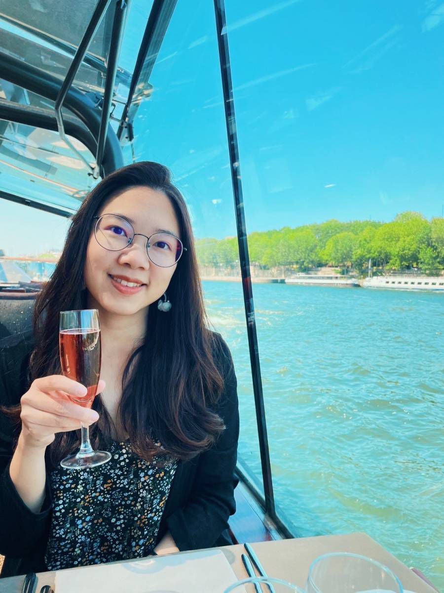

My Resume
Hi! This is Vivian Chene. Please review my online resume. I'm looking
forward to hear from you!

Education
- Degree: Bachelor
- School: National Taiwan University
- Graduated year: 2016
- Department: Occupational Therapy
Work Experience
-
2017.1-2018.6
- 單位：嘉義縣輔具資源中心
- 職稱：輔具評估人員、組長
- 工作內容：執行輔具評估、宣導、諮詢及管理等行政業務。
-
2018.7-2020.7
- 單位：台中榮總嘉義分院
- 職稱：精神部職能治療師
- 工作內容：負責職能團體、工作坊及其他行政業務。
-
2020.8-2021.8
- 單位：台中榮總灣橋分院
- 職稱：精神部職能治療師
- 工作內容：負責管理社區失智據點。
-
2021.9-2022.12
- 單位：康揚
- 職稱：產品訓練師
- 工作內容：辦理產品相關教育訓練、製作相關素材。
-
2022.1-
- 單位：嘉義縣/市輔具資源中心
- 職稱：兼任輔具評估人員
- 工作內容：執行輔具評估。
Skills
-
Language
- Chinese: Native
- English: Good
-
Web Development
-
Video Editing
Achievements
-
GitHub
-
Youtube Channel
- Uploaded 20 travel videos
- 370 followers
Hobbies
Contact me